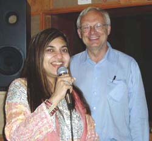

|
CLICK (gently!) on Granny's
|
 |
to close this page.
|
2005 CHRISTMAS GREETINGS

CHRISTMAS
When in the frosty midnight, He cruises through the airWhat Santa needs for Christmas Is fur-lined underwear.
But when sliding down the chimney, Toward the bright grate fire,
Asbestos pants for Santa Would be more SOOTABLE attire.
INSTEAD OF 2 ARMS! |
CHRISTMAS GREETINGS FROM VIOLA
Dear Friends and Family Members:
Although this past year brought a lot of sadness to various members of the Pahl family, we can still rejoice in the message of Christ's birth and redemption for us and all mankind. Since January 1st, we had three deaths in the Pahl family - Shirleyanne Miller, age 50, a niece by marriage. My husband Fred. And then a nephew age 68 - Ray Speidel. And I have had a record loss of close friends throughout the year.
In late fall, Susan took two of the grandsons - Christopher and Wesley - for a long weekend trip into the mountains. I enjoy seeing the four grandsons from time to time. Chris, who lives in a group home nearby, often comes over to do our vacuuming and other chores. Neil, the youngest, who is studying electrical engineering at the University, may be going to Japan for a year's related work involvement. Wesley works has part-time as a baggage handler at the Vancouver airport. Lionel is having problems coping with his illness. Gerhart is very busy with his work, and Penny does a great job of looking after everyone.
In October, Gerhart went on a three-week holiday - by himself - to an exotic area of the world, Mumbai (formerly Bombay) and Goa on the west coast of India. (I have added more information about this trip at the end of this page.)
I have found a very satisfying avenue of involvement: teaching ESL. The local Baptist church has a volunteer program with nearly 100 foreign adult students enrolled. Classes are held two mornings a week, and I have been involved in teaching some of the advanced students. I write many of my own ESL programs, so this creativity is stimulating. Just now we are studying KLONDIKE DAZE - living conditions, animals of the north, food, gold, convicts and con artists, etc. In addition, I have 7 adults coming to my home every Wednesday morning - this is more for conversational interchange, rather than in-depth grammatical studies. We have such a good time together.
Well, it was not great being confined to my condo suite for six weeks while the elevator was being refurbished. Since I am not an elevator technician, I cannot tell you why it took six weeks. Susan tried to arrange her tutoring so that she only had to climb 7 flights once a day - and believe me - that was quite enough. I missed going to church, and because most of my friends are in my age range - none of them could face the challenge of the stairs to visit me. Down the hall from us is a lady of 102 (her unmarried son looks after her), so I was not the only one "under house arrest" as we so jokingly defined it.
Yes, we all will miss Fred this Christmas. We may even shed a tear or two for our wonderful husband, father, grandfather. Why not? We loved him dearly, and there will always be an empty space in our hearts. However, earthly sorrow can never rob us of the joy of the Lord, and so we can rejoice, we can laugh, we can sing with happiness, and the message of Christmas cheers us, for one day our time will turn into eternity and we will meet our loved ones again. God bless you, dear family members and friends.
Joyfully in the Lord,
Viola and family
TGIF - commonly referred to as " Thank God It's Friday"
Has other meanings which are a lot of fun.
GOD BE WITH YOU IN THE COMING YEAR
More about my son's trip:
"The trip was not only an opportunity to see many interesting things, but it was the unique experience of being in a truly different world. Mumbai is another over-populated (13 million people), polluted, dirty, busy, third world city on the surface. If one gets past that, it is extremely interesting and fascinating. I was very adventurous in where I went and what I did, but I had no problems with food or safety. In fact, I ate Indian food all the time, and it was truly wonderful. The impressions I have are all the colours and contrasts one sees: the beautiful saris that the ladies wear; the apparent chaos everywhere (to me anyway); the crowding of millions of people around one all the times; and the contrast between wealth and open poverty. It seemed that the city is just one never-ending bazaar of street shops. Of course, standing out as a visitor made me a constant target of street vendors and beggars. As well, one is very aware of the prominent role that religion, predominantly Hindu and Moslem, has in the everyday life of everyone regardless of social or economic standing. Everything - clothing, accommodation, food and transportation - is extremely inexpensive relative to Canadian prices. A great meal at an air-conditioned restaurant cost about 100 Rupees (about $2.60) and my 12 hour overnight train trip to Goa in a sleeper car (not the kind we have here, trust me!!!) cost about $7 - no extra cost for the cockroaches and leaking train carriages! Goa, about 600 km south form Mumbai has a very different atmosphere from Mumbai and is well known for its spectacular beaches. I went there for a few days to just relax and feast on fresh seafood.
 The highlight of the trip was meeting a very famous Indian singer. At a local beach, I struck up conversation with a young man, and one of the topics was Hindi popular music. I mentioned that I knew something about this and that my favorite singer was Alka Yagnik (equivalent to a Celine Dion or Madonna in our culture). To make a long story short, the young man arranged for me to phone her home which led to an invitation for a one-on-one meeting with her as well as her mother and daughter. I even have pictures to prove it! It seems that Alka was intrigued that a non-Indian, non-Hindi speaker would be so interested in her music. Despite her celebrity status and fame, I found her to be a very personable and warm person to talk with. Alka will be giving a concert in Vancouver in 2006, and I have an invitation to meet with her again. She said that she might even sing one of my favorite songs."
(Fred met the famous Jaclyn Smith of "Charlie’s Angels" – so Gerhart now feels he has kept up with his Dad!)
|
CLICK (gently!) on Granny's
|
|
to close this page.
|